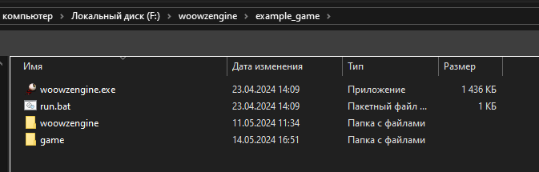

<!DOCTYPE HTML>
<meta charset="utf-8">
<title>WoowzEngine - Wiki</title>

<style>
  html{
    margin: 0;
  }
  body{
    margin: 0;
    font-family: 'Verdana', sans-serif;
    font-size: 20px;
    background-color: rgb(253, 227, 227);
    text-shadow: 0px 2px 5px currentColor;
  }

  button{
    all: unset;
    padding: 3px 3px;
    cursor: pointer;
    color: brown;
    font-family: 'Verdana', sans-serif;
    background-color: rgb(255, 246, 246);
    border: 1px solid brown;
    border-radius: 5px;
    box-shadow: 0px 0px 10px rgb(255, 246, 246);
  }

  button:hover{
    color: red;
    text-decoration: underline;
    text-shadow: 0px 0px 20px red;
  }

  .container {
    display: flex;
    flex-direction: column;
    align-items: center;
  }
  .header {
    height: 20vh;
    width: 100%;
  }
  .footer {
    display: flex;
    justify-content: space-around;
    width: 100%;
  }
  .column {
    flex: 1;
    height: 80vh;
    margin: 10px;
  }
</style>

<html>
  <body id="body" onload="generate()">

  </body>
</html>

<script>

  function generate(){
    StartScreen();
  }

  const body = document.getElementById('body');
  const engineversion = "0.0.1d";

  function ButtonPress(id){
    var htmlstart = `
    <div style="height: 15vh; width: 100%; background-color: rgb(255, 246, 246);">
      <br><br>
      <div style="margin-left: 50px;"><button onclick="StartScreen()">На главную</button></div>

    </div><br>
    `;
    var html = "Not found ["+id+"] Maybe it hasn't been created yet!<br>Не найдено ["+id+"] Может быть ещё не создано!";
    if(id in Pages){
        html = Pages[id][0];
    }
    body.innerHTML = htmlstart+html;
  }

  function StartScreen(){
    body.innerHTML = `

    <div class="header">
        <center><br><font style="font-size: 30px;">WoowzEngine Wiki</font><br>`+engineversion+`<br><br>English will be available soon!<br>Тестовый дизайн сайта</center>
    </div>
    <div class="footer">
        <div id="c_other" class="column"></div>
        <div id="c_func" class="column"></div>
        <div id="c_errors" class="column"></div>
    </div>
    
    `;

    const c_o = document.getElementById('c_other');
    const c_f = document.getElementById('c_func');
    const c_e = document.getElementById('c_errors');

    function TextToButton(text,id,info){
      var char = info[0].charAt(0);
      if(char=="%"){
        return "<br><center>"+info[0].substring(1)+"</center><br>";
      }
      return "<button onclick=\"ButtonPress('"+id+"')\">"+text+"</button> ";
    }

    var s_o = "";
    for (let i = 0; i < ColumnOther.length; i++) {
      s_o = s_o + TextToButton(ColumnOther[i][1],ColumnOther[i][0],ColumnOther[i]);
    }
    c_o.innerHTML = s_o;

    var s_f = "";
    for (let i = 0; i < ColumnFunctions.length; i++) {
      s_f = s_f + TextToButton(ColumnFunctions[i][0],ColumnFunctions[i][0],ColumnFunctions[i]);
    }
    c_f.innerHTML = s_f;

    var s_e = "";
    for (let i = 0; i < ColumnErrors.length; i++) {
      s_e = s_e + TextToButton(ColumnErrors[i][0],ColumnErrors[i][0],ColumnErrors[i]);
    }
    c_e.innerHTML = s_e;
  }

  var ColumnOther = [
    ["%Основное"],

    ["woowzengine","Что такое WoowzEngine?","What is WoowzEngine?"],
    ["games","Игры на WoowzEngine","Games on WoowzEngine"],
    ["license","Лицензия","License"],
    ["%Туториалы"],

    ["gamecreate","Создание игры","Game creation"],
    ["%О коде"],

    ["jsonengine","engine.json","engine.json"],
    ["jsongame","game.json","game.json"],
    ["savemode","Безопасный режим","Save mode"],
    ["keys","Коды клавиш","Key codes"],
    ["%Остальное"],

  ]
  var ColumnFunctions = [
    ["%Функции"],

    ["CheckLua()"],["Wait()"],["Exit()"],["Print()"],["Warn()"],["Error()"],["Fatal()"],["PrintCustom()"],["Cycle()"],["Random()"],["Round()"],["HasDirectory()"],["ReadFile()"],["WriteFile()"],
    ["CreateDirectory()"],["CreateFile()"],["RenameFile()"],["ReadJSON()"],["WriteJSON()"],["Abs()"],["Max()"],["Min()"],["Sqrt()"],["Log()"],["LogE()"],["Log10()"],["Sin()"],["Cos()"],
    ["Floor()"],["Ceil()"],["Tan()"],["Sum()"],["Sub()"],["Mul()"],["Div()"],["Clamp()"],["ASin()"],["ACos()"],["ATan()"],["Cbrt()"],["Exp()"],["ExpM()"],["Fabs()"],["FDim()"],["Hypot()"],
    ["Fma()"],["Mod()"],["Rem()"],["Require()"],["Pow()"],["HSin()"],["HCos()"],["HTan()"],["Trunc()"],["Modf()"],["HasString()"],["Replace()"],["Remove()"],["Charcters()"],["Uppercase()"],
    ["Lowercase()"],["Length()"],["SubStr()"],["ToNumber()"],["Cmd()"],["CreateWindow()"],["DestroyWindow()"],["HasWindow()"],["SetWindowMain()"],["MainWindow()"],["Seed()"],["SetSeed()"],
    ["GetWindowX()"],["GetWindowY()"],["SetWindowX()"],["SetWindowY()"],["SetWindowTitle()"],["SetWindowAutoSize()"],["SetWindowScale()"],["AbsSin()"],["AbsCos()"],["DSin()"],["DCos()"],
    ["SetWindowResizable()"],["SetWindowEventClosed()"],["SetEventClosed()"],["SetWindowEventKeyPress()"],["SetWindowEventKeyRelease()"],["SetWindowEventKeyHold()"],["PressedKeys()"],
    
    ["%Константы"],

    ["Pi"],["Sqrt2"],["E"],["Log2E"],["Log10E"],["Ln2"],["Ln10"],["SourcePath"],["GamePath"],["EnginePath"],["EngineVersion"],["LogPath"],["Version"],["GameName"],["Author"],["SafeMode"],["ConsoleEnabled"],

    ["%Структуры"],
  ]
  var ColumnErrors = [
    ["%Ошибки движка"],

    ["0000"],

    ["F0000"],["F0001"],["F0002"],

    ["E0000"],["E0001"],["E0002"],["E0003"],["E0004"],["E0005"],["E0006"],["E0007"],["E0008"],["E0009"],

    ["C0000"],["C0001"],["C0002"],["C0003"],["C0004"],["C0005"],["C0006"],["C0007"],["C0008"],["C0009"],["C0010"],["C0011"],["C0012"],["C0013"],["C0014"],["C0015"],["C0016"],["C0017"],["C0018"],["C0019"],["C0020"],["C0021"],
    ["C0022"],["C0023"],
    
    ["W0000"],["W0001"],["W0002"],["W0003"],["W0004"],["W0005"],

    ["%Ошибки Lua"],

    ["L0000"],["L0001"],["L0002"],["L0003"],["L0004"],["L0005"],["L0006"],["L0007"],["L0008"],["L0009"],["L0010"],["L0011"],["L0012"],["L0013"],["L0014"],

    ["LW0000"],["LW0001"],["LW0002"],["LW0003"],["LW0004"],["LW0005"],["LW0006"],["LW0007"],["LW0008"],["LW0009"],["LW0010"],["LW0011"],["LW0012"],["LW0013"],["LW0014"],

    ["%Другое"],

    ["GW"],["GE"],["GF"],["S"],["LUA"]
  ]

  var Pages = {

    "woowzengine": [`
    <br>
    
    <center>

    <font style="font-size: 30px;">WoowzEngine</font><br><br><font>Программный/Игровой движок</font>

    Использует в качестве программного кода Lua<br>

    Сделан Woowz11<br>

    Сейчас версия движка (`+engineversion+`)

    </center>
    `,``],

    "games": [`
    <br>
    
    <center>

    Пока-что официальных игр на движке WoowzEngine нету.

    </center>
    `,``],

    "errors": [`
    <br>
    На этом сайте есть список возможных ошибок с примерами их вызова, что-бы лучше понять за что они отвечают.<br>
    Ошибки делятся на разные группы<br>
    <ul>
      <li>Без нумерации - Ошибка никуда не занесена</li>
      <li>E   - Обычная ошибка в движке</li>
      <li>C   - Фатальная ошибка в движке</li>
      <li>W   - Предупреждение в движке</li>
      <li>F   - Файловая ошибка (редкая и возможно в будущем будет удалена)</li>
      <li>L   - Ошибка в Lua</li>
      <li>LW  - Предупреждение в Lua</li>
      <li>LUA - Ошибка Lua (в ваших скриптах)</li>
      <li>S   - Ошибка GLFW</li>
      <li>GE  - Ошибка которую вы создали и использовали Error()</li>
      <li>GF  - Фатальная ошибка которую вы создали и использовали Fatal()</li>
      <li>GW  - Предупреждение которую вы создали и использовали Warn()</li>
    </ul>

    Так же ошибки можно посмотреть в Log файлах по пути /woowzengine/log/...<br>
    Так же существуют фатальные ошибки которые ломают даже Log файлы, так что будьте бдительны!
    `,``],

    "license": [`
    <br>
    Лицензия скоро будет указана...
    `,``],
    
    "gamecreate": [`
    <br>
    <center>Туториал как создать игру/приложение на WoowzEngine</center><br>
    *На данный момент*<br>
    Нужно скачать файл woowzengine.exe<br>
    Создать папку с вашим проектом<br>
    Разместить туда woowzengine.exe<br>
    Потом создать или найти/скачать файл run.bat<br>
    Если создавать то внутри напечатать это:<br>
    @echo off<br>
    woowzengine.exe %~dp0<br>
    pause<br>
    Потом запустить woowzengine.exe<br>
    И остальные файлы сгенерируются (woowzengine,game)<br>
    <br>
    Игровые скрипты находятся в папке game<br>
    start.lua это скрипт который будет запускаться при запуске игры (в данный момент run.bat)<br>
    `,``],

    "jsonengine": [`
    <br>
    <ul>
      <li>Console - bool - "true" - Отображение консоли при старте</li>
      <li>SaveMode - bool - "true" - <button onclick="ButtonPress('savemode')">Безопасный режим</button></li>
      <li>LogType - string - "log" - Формат файла лога</li>
      <li>LogFormat - string - "%y-%mn-%d-%h-%m-%s-%ms" - Формат навзания лога (%y - год, %mn - месяц, %d - день, %h - час, %m - минута, %s - секунда, %ms - миллисекунда, %w - день недели)</li>
      <li>LogStyle - string - "%b[%h:%m:%s:%ms][%t] %c" - Формат текста в логе (%c - сообщение, %tt - база сообщения, %t - база сообщения (с отступами), %b - тип сообщения (* - print, ? - warning, ! - error, # - fatal) ,%y - год, %mn - месяц, %d - день, %h - час, %m - минута, %s - секунда, %ms - миллисекунда, %w - день недели)</li>
      <li>LogFatal - string - "-FATAL" - Когда у вас происходит фатальная ошибка, в конце названия лога приписывается это</li>
    </ul>
    `,``],

    "jsongame": [`
    <br>
    <ul>
      <li>Name - string - "Example Game" - Название вашей игры/приложения</li>
      <li>Author - string - "Unknown" - Автор игры/приложения</li>
      <li>Version - string - "0.0.0" - Версия вашей игры/приложения</li>
    </ul>
    `,``],

    "savemode": [`
    <br>
    Безопасный режим (SaveMode) - Это режим который может запрещать некоторые функции в скриптах, или их разрешать в зависимости от того что в скрипте написано.<br>
    <br>
    Безопасный режим будет полезен тем, кто боиться запускать приложение от другого пользователя.<br>
    Он отключает сильные функции например изменение, создание, удаление файлов, использование Cmd, использования .dll файлов и т.д.<br>
    <br>
    Включить/Выключить его можно в файле <button onclick="ButtonPress('jsonengine')">engine.json</button><br>
    `,``],

    "keys": [`
    <br>
Список клавиш<br>
<br>
Номер - Название<br>
<br>
    
<h3>Цифры</h3>
<li>49 - 1</li>
<li>50 - 2</li>
<li>51 - 3</li>
<li>52 - 4</li>
<li>53 - 5</li>
<li>54 - 6</li>
<li>55 - 7</li>
<li>56 - 8</li>
<li>57 - 9</li>
<li>48 - 0</li>

<h3>Специальные клавиши</h3>
<li>341 - ctrl</li>
<li>340 - shift</li>
<li>280 - caps</li>
<li>258 - tab</li>
<li>96 - tilda</li>
<li>256 - esc</li>
<li>343 - win</li>
<li>342 - alt</li>
<li>32 - space</li>
<li>344 - shift2</li>
<li>257 - enter</li>
<li>259 - backspace</li>
<li>45 - minus</li>
<li>61 - plus</li>
<li>92 - slash</li>
<li>283 - printscreen</li>
<li>260 - insert</li>
<li>268 - home</li>
<li>261 - delete</li>
<li>266 - pageup</li>
<li>267 - pagedown</li>
<li>265 - up</li>
<li>263 - left</li>
<li>264 - down</li>
<li>262 - right</li>

<h3>Функциональные клавиши</h3>
<li>290 - f1</li>
<li>291 - f2</li>
<li>292 - f3</li>
<li>293 - f4</li>
<li>294 - f5</li>
<li>295 - f6</li>
<li>296 - f7</li>
<li>297 - f8</li>
<li>298 - f9</li>
<li>299 - f10</li>
<li>300 - f11</li>
<li>301 - f12</li>
<li>282 - numlock</li>
<li>331 - numslash</li>
<li>332 - asterisk</li>
<li>333 - numminus</li>
<li>327 - num7</li>
<li>328 - num8</li>
<li>329 - num9</li>
<li>334 - numplus</li>
<li>324 - num4</li>
<li>325 - num5</li>
<li>326 - num6</li>
<li>321 - num1</li>
<li>322 - num2</li>
<li>323 - num3</li>
<li>335 - numenter</li>
<li>320 - num0</li>
<li>330 - numdelete</li>

<h3>Буквы и знаки препинания</h3>
<li>81 - q</li>
<li>87 - w</li>
<li>69 - e</li>
<li>82 - r</li>
<li>84 - t</li>
<li>89 - y</li>
<li>85 - u</li>
<li>73 - i</li>
<li>79 - o</li>
<li>80 - p</li>
<li>91 - leftbracket</li>
<li>93 - rightbracket</li>
<li>65 - a</li>
<li>83 - s</li>
<li>68 - d</li>
<li>70 - f</li>
<li>71 - g</li>
<li>72 - h</li>
<li>74 - j</li>
<li>75 - k</li>
<li>76 - l</li>
<li>59 - colon</li>
<li>39 - apostrophe</li>
<li>90 - z</li>
<li>88 - x</li>
<li>67 - c</li>
<li>86 - v</li>
<li>66 - b</li>
<li>78 - n</li>
<li>77 - m</li>
<li>44 - comma</li>
<li>46 - dot</li>
<li>47 - question</li>

<h3>Остальное</h3>
<li>-1 - notfound   (Эта клавиша не считывается)</li>
<li>? - key_?   (Если вы получаете эту клавишу, напишите Woowz11 что-бы он её внёс в список)</li>
    
    `,``],

  }

</script>